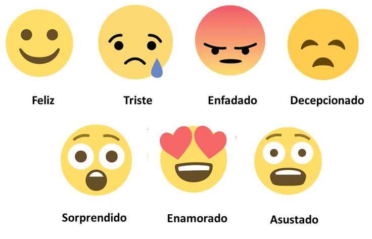
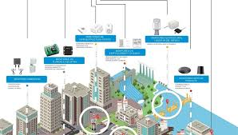

Mi nombre es Kerly Ramirez Rocafuerte , nací el 10 de enero del 2001, tengo 24 años y vivo en Recinto la Maravilla. Estoy cursando el 3er Semestre de la carrera Sistemas de Información en la Universidad Técnica de Babahoyo . Me encanta mucho todo lo que tiene que ver con la tecnología y el desarrollo de software. Siempre me ha llamado la atencion saber mas de lo que me enseññan porque busco aprender y mejorar mis habilidades en las materias y gestión de proyectos.
Inicio
¡¡Hola tenga un cordial saludo! Este es mi portafolio personal, donde usted podrá conocer más sobre mi persona por ejemplo sabra sobre mis habilidades y mis proyectos
Sobre mí
Habilidades
Aquí están algunas de mis habilidades, entre ellas:
| Habilidades y Competencias | Nivel |
|---|---|
| Organización del tiempo | Intermedio |
| Resolución de problemas | Intermedio |
| Comunicación asertiva | Intermedio |
| Gestión del estrés | Basico |
| Programación básica | Intermedio |
| Trabajo en equipo académico | Intermedio |
| Resolución de problemas | Intermedio |
Galería de Proyectos
A continuación, presento una selección de proyectos en los que he trabajado, incluyendo una breve descripción y una imagen de cada uno.
Proyecto 1: Plataforma de Análisis de Sentimientos en Redes Sociales
Plataforma que utiliza procesamiento de lenguaje natural para analizar el sentimiento de las publicaciones en redes sociales, ayudando a las marcas a entender las opiniones de los usuarios.
Proyecto 2: Aplicación de Recetas Saludables
Una aplicación que sugiere recetas saludables personalizadas según preferencias alimenticias.

Proyecto 3: Sistema de Monitoreo IoT para Ciudades Inteligentes
Implementación de un sistema IoT para monitorear variables como calidad del aire y tráfico, recopilando datos mediante sensores en tiempo real para mejorar la gestión urbana
